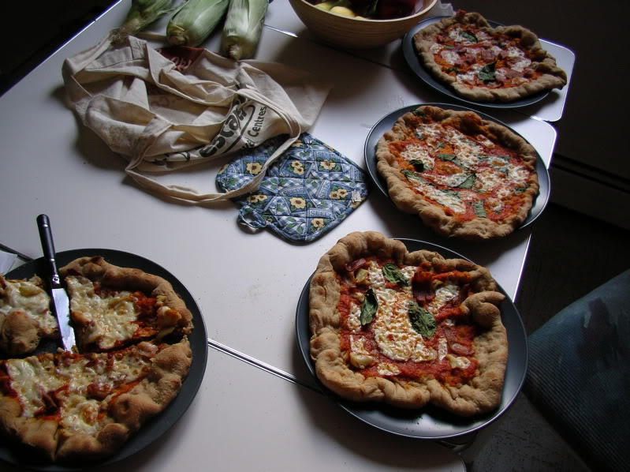
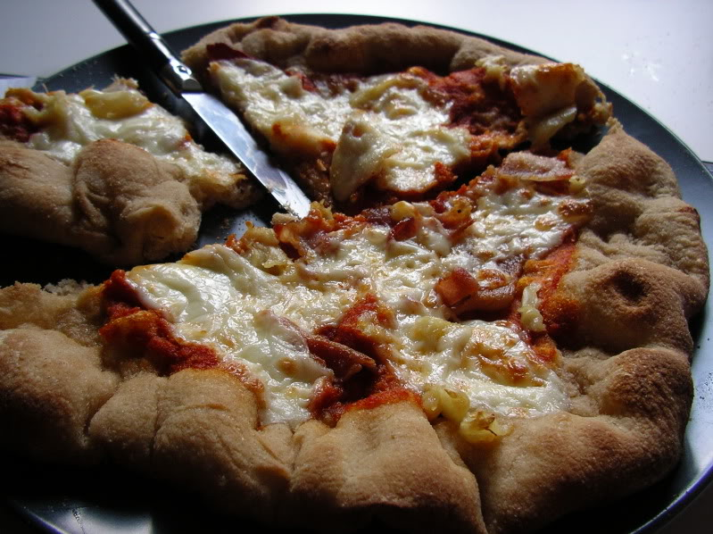

Italian or New York-style, thin-crust, pizza
Ingredients
- prepared "old dough" recipe
- fresh mozzarella cheese
- tomato sauce
- fresh basil, meats, tomatoes, onions, roasted garlic, or any other toppings you wish
Special equipment
- Pizza stone
- Pizza peel or cutting board with handle, big enough for a pizza at the size of your choice
- Oven at least 500°F
March 24, 2013
The most important thing to know about a good pizza crust is that it requires preparation. The best pizza crusts (and breads, for that matter) are made with "old dough", or delayed fermentation. You make "old dough" by refrigerating your dough for 1-3 days before using it. Really! This improves the flavour because the yeast have more time to eat and create lots of enzymes that are tasty. (This is oversimplified - you should read The Bread Baker's Apprentice for more information on why old dough is so good!) You also can't skimp on the salt. Flour has very little flavour if not salted, and this dough is made of nothing but flour, yeast, salt, and water.
I say this is Italian or New York-style, because I really am not sure who made this type of pizza popular. Some say it was New York. Some say it was Italy. Either way, it's a very thin, crisp crust with lots of flavour and few toppings. It is cooked at a VERY high temperature, at least 500°F in your oven.
I used a recipe from The Bread Baker's Apprentice called Pain a l'ancienne. It is not specifically a pizza dough recipe, but I find it makes a great pizza anyway. I don't think I can give the recipe here, but you might be able to find it online, or use any pizza dough recipe, preferably a delayed fermentation recipe.
- Preheat your oven to 500°F or higher, if your oven allows, with your pizza stone inside. Your oven must be blazing hot, and your stone too. I prefer to heat for at least 1 hour, so that I know the oven is very, very hot.
- Depending on how big a pizza you want to make, cut off a portion of dough and stretch it carefully, trying not to deflate it too much (some deflation is inevitable). As you stretch, try to make it as thin as possible without risk of tearing. If the dough starts to feel tough and won't stretch anymore, or feels like it is going to tear, or keeps retracting back to its original shape, let it sit for 5 minutes. In that time, the gluten in the dough will relax and allow you to stretch it again.
- When you have stretched the dough to its final shape and it is thin, place it on a board with a handle, like a cutting board or a pizza peel, and make sure that it is able to slide. You may need to flour the bottom of the dough if it is sticky. You will need to shove the pizza into the oven with this board, so it needs to be able to slide on the board.
- Slather on a thin layer of tomato paste. Top with chunks of fresh mozzarella and any other toppings you wish. Do not add too many toppings. Most peoples' tendency in making a pizza is to cram on as many toppings as you can, but for a thin-crust, Italian or New York style, it will be too ovewhelming and the pizza runs the risk of falling apart if the toppings are too heavy.
- Once the oven is blazing hot, transfer the pizza onto the stone by shifting the board forward repeatedly while at a slight downward angle. If you are having trouble, put the pizza on a piece of parchment paper, and it will slide more easily. The parchment paper can go in the oven under the pizza. Do not use wax paper. It will burn and be really gross.
- When the pizza is done, the cheese will be melted and the crust will be a bit charred and blistered, about 5 minutes depending how hot your oven is and whether the stone had enough time to fully heat. Be sure to watch it! Since the oven is so hot, it can go from cooked to over-cooked in less than a minute. The crust will be stiff enough that you can lift or push the pizza onto a board with a spatula.
- Add more fresh basil and drizzle with olive oil if desired.